정보통신기사(구) (2015-06-06 기출문제)
1과목: 디지털 전자회로
1. 무부하시의 직류출력전압이 12[V]인 정류회로의 전압 변동률이 10[%]일 경우 전부하시의 단자전압은 약 얼마인가?
- 9.9[V]
- 10.9[V]
- 11.9[V]
- 12.9[V]
(정답률: 76%)

2. 다음 중 정류회로에 대한 설명으로 틀린 것은?
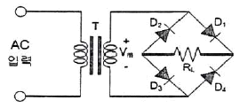
- (+) 반주기에는 D1과 D3가 On되어 정류작용을 한다.
- 고압 정류회로에 적합하다.
- Tap형 전파정류회로에 비해 정류효율이 낮고 전압 변동률이 크다.
- 중간 Tap이 있어 소형 변압기로 사용할 수 있다.
(정답률: 75%)
3. 다음 중 드레인 접지형 FET 증폭기에 대한 특성으로 틀린 것은? (단, FET의 파라미터 Am은 상호 전도도이다.)
- 입력 임피던스는 매우 크다.
- 전압 이득은 약 1이다.
- 출력은 입력과 역위상이다.
- 출력 임피던스는 약 1/Am이다.
(정답률: 77%)
4. 다음 주어진 회로에서 점선으로 표시된 회로의 기능이 아닌 것은?
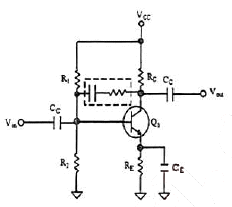
- 증폭 이득을 조절할 수 있다.
- 입출력 임피던스를 조절할 수 있다.
- 대역폭을 조절할 수 있다.
- 온도 특성을 조절할 수 있다.
(정답률: 78%)
5. 이득이 100인 저주파 증폭기가 10[%]의 왜율을 가질 경우, 왜율을 1[%]로 개선하기 위해서는 얼마의 전압 부궤환을 걸어 주어야 하는가?
- 0.01
- 0.09
- 99
- 100
(정답률: 66%)
6. 이상적인 차동증폭기의 동상제거비(CMRR)는?
- 0
- 1
- -1
- ∞
(정답률: 74%)
7. 다음 중 발진에 대한 설명으로 틀린 것은?
- 발진회로는 전기적인 에너지를 받아서 지속적인 전기적 진동을 일으킨다.
- 발진이 지속되려면 출력신호의 일부를 정궤환시켜야 한다.
- 외부로부터 일정한 입력신호를 제공해주어야 발진과정을 지속할 수 있다.
- 발진회로는 정현파 발생회로와 비정현파 발생회로가 있다.
(정답률: 67%)
8. 다음 회로는 어떤 발진회로인가?
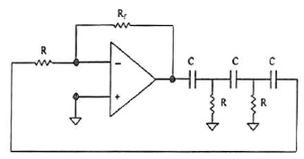
- 윈-브리지 발진회로
- 위상천이 발진회로
- 클랩 발진회로
- 피어스 발진회로
(정답률: 67%)
9. 다음 중 주파수변조(FM)에서 신호대 잡음비(S/N)를 개선하기 위한 방법이 아닌 것은?
- 디엠파시스(De-Emphasis) 회로를 사용한다.
- 주파수대역폭을 넓게 한다.
- 변조지수를 크게 한다.
- 증폭도를 크게 높인다.
(정답률: 65%)
10. DPSK 복조에 주로 이용되는 검파방식은?
- 포락선 검파
- 동기 검파
- 동기직교 검파
- 차동위상 검파
(정답률: 65%)
11. 다음 중 멀티바이브레이터의 특징으로 옳은 것은?
- 고차의 고조파를 포함하고 있다.
- 부성 저항을 이용한 발진기이다.
- 발진 출력이 크다.
- 극초단파의 발생에 적합하다.
(정답률: 65%)
12. 다음 중 그림과 같은 회로에 대한 설명으로 옳은 것은?
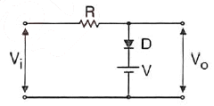
- 입력 파형의 아랫부분을 잘라내는 베이스 클리퍼 회로이다.
- 입력 파형의 윗부분을 잘라내는 피크 클리퍼 회로이다.
- 직렬형 베이스 클리퍼 회로이다.
- 입력 파형의 위, 아래 부분을 일정하게 잘라내는 클리퍼 회로이다.
(정답률: 83%)
13. 다음 중 0에서 9까지의 십진수를 표현하는데 사용되는 2진수 체계는?
- ASCII 코드
- 그레이 코드
- 해밍 코드
- BCD 코드
(정답률: 83%)
14. 다음 회로가 수행할 수 있는 논리 기능은?
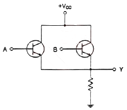
- NOT
- OR
- AND
- XOR
(정답률: 77%)
15. 논리식
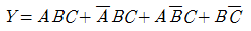
를 간단히 하면?- AB+C
- AC+B
- ABC
- A+BC
(정답률: 68%)
16. 다음 진리표를 부울 대수식으로 표시하면?
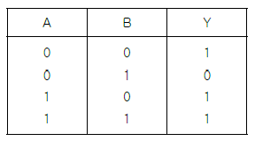
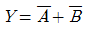
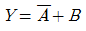
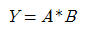
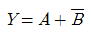
(정답률: 80%)
17. 30:1의 리플계수기를 설계할 때 최소로 필요한 플립플롭의 수는?
- 4
- 5
- 6
- 8
(정답률: 83%)
18. 다음 중 동기식 3진 카운터에 대한 설명으로 틀린 것은?
- 병렬 카운터라고도 한다.
- 각 단에 클럭펄스가 인가되는 회로이다.
- 동시에 Trigger 입력이 인가되기 때문에 여러단이 동시에 동작되므로 고속으로 동작되는 회로에 많이 이용된다.
- 전단의 출력이 Trigger 입력으로 들어온다.
(정답률: 65%)
19. 다음 그림과 같이 2n개(0~7)의 십진수 입력을 넣었을 때 출력이 2진수(000~111)로 나오는 회로의 명칭은?
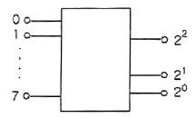
- 디코더(Decoder) 회로
- A-D 변환회로
- D-A 변환회로
- 인코더(Encoder) 회로
(정답률: 77%)
20. 다음 중 전가산기(Full Adder)에 대한 설명으로 옳은 것은?
- 아랫자리의 자리올림을 더하여 그 자리 2진수의 덧셈을 완전하게 하는 회로이다.
- 아랫자리의 자리올림을 더하여 홀수의 덧셈을 하는 회로이다.
- 아랫자리의 자리올림을 더하여 짝수의 덧셈을 하는 회로이다.
- 자리올림을 무시하고 일반계산과 같이 덧셈을 하는 회로이다.
(정답률: 81%)
2과목: 정보통신 시스템
21. 정보통신시스템에서 여러 단말장치들이 하나의 통신회선을 통해 데이터를 전송할 수 있는 기법은?
- CRC(Cyclic Redundancy Code)
- LRC(Longitudinal Redundancy Check)
- FEC(Forward Error Correction)
- MUX(Multiplexing)
(정답률: 87%)
22. 아날로그 전송 회선에서 BPSK 변조방식을 사용하여 4,800[bps]의 전송속도로 데이터를 전송하려 할 때 필요한 주파수대역폭은? (단, 잡음이 없는 채널일 경우)
- 1,200[Hz]
- 2,400[Hz]
- 4,800[Hz]
- 9,600[Hz]
(정답률: 75%)
23. 데이터그램 교환방식과 가상회선 교환방식은 어느 교환 통신망에 속하는 기술인가?
- 패킷교환망
- 회선교환망
- 메시지교환망
- 음성교환망
(정답률: 73%)
24. 다음 중 성형(Star Topology) 통신망 구조에 대한 설명으로 옳지 않은 것은?
- 노드의 자율성이 크다.
- 네트워크 전단시설을 중앙에 위치할 수 있다.
- 적은 양의 케이블이 필요하다.
- 아크넷, 토큰링, 이더넷 등에서 사용한다.
(정답률: 73%)
25. 프로토콜의 구성요소 중 통신할 ‘신호들의 실제 의미’란 뜻으로 상호협상과 오류처리에 대한 제어정보 등이 포함되는 것은?
- 의미(Semantics)
- 구문(Syntax)
- 동기(Timing)
- 포맷(Fotmat)
(정답률: 87%)
26. 데이터링크 계층의 프로토콜 중 비트 중심의 프로토콜이 아닌 것은?
- SDLC
- X.25
- HDLC
- PPP
(정답률: 83%)
27. HDLC 프로토콜에서 I-프레임의 P/F 비트의 의미는 무엇에 따라 다르게 해석될 수 있는가?
- 전송 방식
- 시스템 모드(Mode)
- 시스템 구성(Configuration)
- 프레임이 명령인지 또는 응답인지
(정답률: 72%)
28. OSI 참조모델에서 n-1계층 패킷의 데이터 부분은 N계층의 패킷(데이터와 헤더) 전체를 포함한다. 이러한 개념을 무엇이라고 하는가?
- 서비스
- 인터페이스
- 대등-대-대등 프로세스
- 캡슐화
(정답률: 86%)
29. 다음 중 OSI 7 Layer와 TCP/IP의 관계에 대한 설명으로 옳지 않은 것은?
- TCP/IP는 OSI 참조모델보다 먼저 개발되었다.
- TCP/IP의 계층구조는 OSI 모델의 계층 구조와 정확하게 일치하지 않는다.
- OSI 모델은 7개 계층으로 TCP/IP 프로토콜은 4개 계층으로 구성되어 있다.
- OSI 모델의 상위 4개의 계층은 TCP/IP 프로토콜에서 응용계층으로 표현된다.
(정답률: 83%)
30. 종합정보통신망(ISDN)에서 사용자-망간 인터페이스의 기본 채널 구조인 2B+D의 전송용량은?
- 48[kbps]
- 96[kbps]
- 144[kbps]
- 192[kbps]
(정답률: 82%)
31. 다음 중 근거리통신망(LAN)에서 사용하는 프로토콜이 아닌 것은?
- CSMA/CD
- Token Ring
- ALOHA
- BGP
(정답률: 68%)
32. 다음 중 무선 홈네트워킹 기술로 옳지 않은 것은?
- 블루투스(Bluetooth)
- CDMA
- 무선LAN(IEEE 802.11)
- 지그비(Zigbee)
(정답률: 84%)
33. 다음 중 인터네트워크를 구축할 때 요구되는 사항이 아닌 것은?
- 네트워크 간의 링크를 제공하며 최소한 물리적 계층과 링크의 제어 연결이 요구된다.
- 상이한 네트워크의 프로세스들 사이에 데이터의 경로 배정과 전달에 관한 모든 것을 제공해야 한다.
- 여러 종류의 네트워크들과 게이트웨이의 사용에 대한 트랙을 보존하며 상태정보를 유지하고 요금계산 서비스를 제공해야 한다.
- 다양한 서비스를 위해 임의 구성된 네트워크 구조 자체를 자유롭게 변형할 수 있어야 한다.
(정답률: 79%)
34. 안정적인 VoIP 통신을 위해서 네트워크상에서 안정적인 QoS(Quality of Service)를 보장하기 위한 기술이 아닌 것은?(오류 신고가 접수된 문제입니다. 반드시 정답과 해설을 확인하시기 바랍니다.)
- VRRR
- RSVP
- DiffServ
- MPLS
(정답률: 52%)
35. 다음 중 전송속도가 가장 빠른 디지털가입자회선(Digital Subscriber Line) 방식은?
- ADSL
- SDSL
- VDSL
- HDSL
(정답률: 79%)
36. 다음 중 xDSL 회선의 변복조 방식인 CAP(Carrier-less Amplitude /Phase)와 DMT(Discrete Multi-Tone)의 주파수 배치표로 옳은 것은?
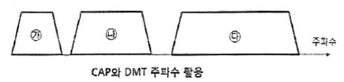
- CAP방식 : ㉮ 음성전화(POTS), ㉯ 역방향(Upstream), ㉰ 순방향(Downstream)
- CAP방식 : ㉮ 순방향(Downstream), ㉯ 역방향(Upstream), ㉰ 음성전화(POTS)
- DMT방식 : ㉮ 순방향(Downstream), ㉯ 역방향(Upstream), ㉰ 음성전화(POTS)
- DMT방식 : ㉮ 음성전화(POTS), ㉯ 순방향(Downstream), ㉰ 역방향(Upstream)
(정답률: 85%)
37. 정보통신시스템의 신뢰도에 대한 계획 수립시 고려해야 할 사항이 아닌 것은?
- 반복성
- 보전성
- 확실성
- 보안성
(정답률: 74%)
38. WLAN(Wireless Local Area Network)의 MAC 알고리즘으로 옳은 것은?
- FDMA(Frequency Division Multiple Access)
- CDMA(Code Division Multiple Access)
- CSMA/CA(Carrier Sense Multiple Access Collision Avoidance)
- CSMA/CD(Carrier Sense Multiple Access Collision Detection)
(정답률: 67%)
39. TMN(전기통신관리망)의 구성요소 중 운영체제와 망 요소 사이에서 프로토콜 변환, 경보 임계값 설정 및 통신 속도 제어 등의 기능을 수행하는 것은?
- OS
- MD
- DCN
- NE
(정답률: 71%)
40. 다음 중 네트워크의 보안기술로 옳은 것은?
- VPN
- 스니핑
- 스푸핑
- DoS(Denial of Service)
(정답률: 90%)
3과목: 정보통신 기기
41. 2개의 전극(Anode와 Cathode) 사이 삽입된 유기물층에 가해지는 전기장을 가해 발광하게 되는 것은?
- CRT
- OLED
- PDP
- TFT-LCD
(정답률: 89%)
42. 다음 중 휴대형 정보 단말기의 특성으로 옳지 않은 것은?
- 대용량 메모리 IC
- 저전력 RF(Radio Frequency) 부품 기술
- 고용량 전지
- 부품의 대형화
(정답률: 92%)
43. 정보통신시스템 소프트웨어 중 운영체제의 기능이 아닌 것은?
- 메모리관리
- 잡(job)관리
- 범용라이브러리
- 통신제어
(정답률: 75%)
44. 다음 중 DSU에 대한 설명으로 옳지 않은 것은?
- 유니폴라 신호를 바이폴라 신호로 변환시키는 디지털모뎀이다.
- 벨시스템의 DDS에 사용된다.
- T1/E1 간의 타이밍을 보정해준다.
- 송수신 전단에 위치하여 원거리 디지털전송을 보장한다.
(정답률: 59%)
45. 다음 중 광통신용 신호와 관련된 다중화 기술은 무엇인가?
- FDM
- TDM
- WDM
- CDM
(정답률: 86%)
46. 다음 중 주파수 분할 다중화기(FDM: Frequency Division Multiplexer)의 특징에 해당하지 않는 것은?
- 1,200보오(Baud) 이하의 비동기에서만 사용한다.
- FDM 자체가 모뎀 역할까지 하기 때문에 별도의 모뎀이 필요 없다.
- 구조가 간단하고 가격이 저렴하다.
- 채널 간 완충 지역으로 가드 밴드(Guard Band)가 있어 대역폭 활용이 높다.
(정답률: 61%)
47. 다음 공동이용기 중 폴(Poll)에 의해 네트워크 제어가 이루어지는 경우 사용되는 장치는?
- 지능 다중화기
- 모뎀 공동이용기
- 포트 공동이용기
- 포트 선택기
(정답률: 65%)
48. 다음 중 WAN을 구성하기 위한 패킷교환의 설명으로 옳지 않은 것은?
- 데이터그램의 접근 방법은 네트워크층의 기술이다.
- 가상회선 접근 방법은 데이터링크층의 기술이다.
- 가상회선을 위한 원거리 네트워크는 송신지에서 목적지의 트래픽을 전달하는 교환기가 있다.
- 가상회선은 송신지에서만 전역 주소(Global Addressing)가 필요하다.
(정답률: 79%)
49. 유선전화망에서 노드가 10개일 때 그물형(Mesh형)으로 교환회선을 구성할 경우, 링크 수를 몇 개로 설계해야 하는가?
- 30개
- 35개
- 40개
- 45개
(정답률: 91%)
50. 사무실에서 인터넷 구내 망을 설치하여 음성전화 서비스를 제공하는 설비는?
- PBX
- IP-PBX
- ISDN-PBX
- Solo-PBX
(정답률: 82%)
51. 20개의 중계선으로 5[Erl]의 호량을 운반하였다면 이 중계선의 효율은 몇 [%]인가?
- 20[%]
- 25[%]
- 30[%]
- 35[%]
(정답률: 86%)
52. 다음 중 화상통신 회의시스템의 기본 구성 요소가 아닌 것은?
- 전송로
- 단말기
- 컴퓨터 센터 시스템
- 다중화기
(정답률: 74%)
53. 다음 중 멀티미디어를 기반으로 하는 응용으로 대화형(Dialogue) 응용에 관한 설명으로 옳지 않은 것은?
- 응용분야는 화상 전화, 화상 회의 등이다.
- 생성된 멀티미디어 데이터가 일정 시간 내에 전송되어야 한다.
- 데이터의 압축과 복원이 동시에 이루어져야 한다.
- 비대칭(Asynnetric) 멀티미디어 응용이다.
(정답률: 79%)
54. 자유공간에서 송수신 안테나간 거리 2[km]에 10[GHz]의 주파수로 통신 링크를 구성하고자 한다. 이에 대한 전송경로의 손실은 약 얼마인가?
- 106.52[dB]
- 112.52[dB]
- 118.52[dB]
- 124.52[dB]
(정답률: 75%)
55. 다음 중 데이터 버스트(Burst)를 송신하고자 할 때 사전에 시간대역의 사용을 요구하여, 지정된 시간대역으로 버스트를 송신하는 방식은?
- A-ALOHA
- P-ALOHA
- S-ALOHA
- R-ALOHA
(정답률: 70%)
56. 다음 중 인공위성 궤도의 종류에 해당하지 않은 것은?
- 저궤도(Low Earth Orbit)
- 중궤도(Medium Earth Orbit)
- 임의궤도(Random Earth Orbit)
- 정지궤도(Geostationary Orbit)
(정답률: 80%)
57. 다음 중 양안시차, 폭주(Vergence)를 이용하는 방식의 TV는?
- HDTV
- SDTV
- 3DTV
- IPTV
(정답률: 87%)
58. 고품질의 음성 및 영상 서비스를 제공할 수 있는 이동형 멀티미디어 방송은?
- HDTV(High Definition Television)
- DMB(Digital Multimedia Broadcasting)
- TRS(Trunked Radio System)
- IS-95C
(정답률: 83%)
59. 단순한 전송 기능 이상으로 정보의 축적, 가공, 변환 처리 등의 부가가치를 부여한 음성 또는 데이터 정보를 제공해 주는 복합적인 정보서비스망은?
- DSU
- VAN
- LAN
- MHS
(정답률: 82%)
60. MPLS(Multi Protocol Label Switching) 기반의 인터넷서비스의 특징이 아닌 것은?
- 교환기능과 제어기능이 분리되어 다양한 전달망에 적용될 수 있으며 이기종간에도 동일한 제어기능을 적용할 수 있다.
- 레이블에 목적지뿐만 아니라 서비스등급의 의미를 부여할 수 있으므로 IP QoS 제공이 용이하다.
- 레이블에 의한 터널링의 구성이 가능하므로 이를 이용한 VPN 서비스 제공이 가능하다.
- 헤드처리 오버헤드가 증가되어도 기능망을 이용하므로 기존 라우터에 비해 대용량 구성이 용이하다.
(정답률: 75%)
4과목: 정보전송 공학
61. 신호를 표본화하여 전송한 후 수신측에서 신호를 복원하면 진폭과 위상이 약간 변화되는데 이러한 현상을 무엇이라 하는가?
- 개구 효과(Aperture effect)
- 양자화 잡음(Quantizing noise)
- 페이딩(Fading)
- 도플러 효과(Doppler effect)
(정답률: 61%)
62. PCM-32 채널 다중화 장치의 음성비트와 표본화 주기는?
- 7비트, 256[μs]
- 8비트, 125[μs]
- 8비트, 256[μs]
- 7비트, 125[μs]
(정답률: 61%)
63. 다음 중 위상편이변조(PSK) 방식의 설명으로 옳지 않은 것은?
- 복조시 동기 검파방식을 사용한다.
- 디지털신호에 따라 반송파의 주파수만 변화시킨다.
- 전송로의 레벨변동과 오류 확률이 적다.
- 중간 속도의 데이터 전송에서 이용된다.
(정답률: 69%)
64. 다음 중 채널용량에 대한 설명으로 옳지 않은 것은?
- 통신용량이라고도 하며 단위로는 [bps]를 사용한다.
- 수신측에 전송된 정보량은 상호 정보량의 최대치이다.
- 채널용량을 증가시키기 위해서는 대역폭을 줄이고 S/N비를 증가시켜야 한다.
- 잡음이 있는 채널에서는 Shannon의 공식을 사용하여 채널용량을 계산한다.
(정답률: 67%)
65. 중계케이블의 통화전압이 55[V]이고 잡음전압이 0.⑤5[V]이면 잡음레벨[dB]은?
- 44[dB]
- 50[dB]
- 55[dB]
- 60[dB]
(정답률: 80%)
66. UTP 케이블의 카테고리(Category)라 함은 표준화 기구에서 정의한 케이블 회선의 꼬임 정도 등을 나타내는 인터페이스 규격이다. 다음 중 대부분 Unshielded 형태로 제작되며, 최대 100[MHz]의 전송대역까지 통신 가능한 미국표준(EIA-568) 규격은?
- Category5 또는 5e
- Category6
- Category6A
- Category7
(정답률: 87%)
67. 최대 전송률을 예상할 수 있는 나이퀴스트(Nyquist) 공식으로 맞는 것은? (단, C는 채널용량, B는 전송채널의 대역폭, M은 진수, S/N은 신호대 잡음비)
- C = B×log2(M)
- C = 2×B×log2(M)
- C = B×log2(M×1+S/N)
- C = 2×B×log2(M×(1+S/N))
(정답률: 84%)
68. 다음 중 광케이블에서 광에너지의 전달속도인 군속도(Group velocity)는 코어의 굴절률과 어떤 관계를 가지는가?
- 코어의 굴절률에 비례한다.
- 코어의 굴절률에 반비례한다.
- 코어의 굴절률의 제곱에 비례한다.
- 코어의 굴절률의 제곱에 반비례한다.
(정답률: 83%)
69. 다음 중 HDLC 전송 프로토콜의 국 사이에서 교환되는 데이터 전송 단위는?
- 데이터그램
- 프레임
- 비트
- 패킷
(정답률: 66%)
70. HDLC 프로토콜에서 사용되는 프레임 내에 제어부를 구성하는 비트들은 사용목적에 따라 3가지의 구성형식을 가지게 되는데 이에 해당되지 않는 것은?
- 감시형식(S-frame)
- 비번호제형식(U-frame)
- 응답형식(R-frame)
- 정보전송형식(I-frame)
(정답률: 70%)
71. 블록동기방식 중 문자동기방식에 대한 설명으로 옳지 않은 것은?
- 데이터블록 앞에 데이터의 시작을 알리는 전송제어 코드 'STX' 사용
- 전송 시 동기용 전송 제어코드 'SYN' 2개 이상 사용
- 데이터 전송의 끝을 의미하는 'END' 제어신호 사용
- 에러를 체크하기 위한 에러제어코드 'BCC' 사용
(정답률: 80%)
72. 입력 데이터 비트율(Bit Rate)이 4,800[bps]일 때, 맨체스터 부호인 경우 심볼률 및 대역폭은 각각 얼마인가?
- 2,400[symbols/sec], 2,400[Hz]
- 4,800[symbols/sec], 4,800[Hz]
- 9,600[symbols/sec], 9,600[Hz]
- 12,000[symbols/sec], 12,000[Hz]
(정답률: 79%)
73. 다음 중 네트워크의 구성 형태(Topology)에 해당되지 않는 것은?
- 성형(Star)
- 버스형(Bus)
- 링형(Ring)
- 셀형(Cell)
(정답률: 87%)
74. 다음 중 IP 헤더의 구조에 속하지 않는 것은?
- 버전(Version)
- 헤더길이(Header length)
- IP 주소
- 긴급 포인터(Urgent Pointer)
(정답률: 86%)
75. 다음 중 UDP에 대한 설명으로 옳지 않은 것은?
- 신뢰성을 제공하지 않는다.
- 연결설정 없이 데이터를 전송한다.
- 연결 등에 대한 상태 정보를 저장하지 않는다.
- TCP에 비해 오버헤드의 크기가 크다.
(정답률: 82%)
76. 다음 중 VLAN의 설명으로 옳은 것은?
- 유니캐스트 도메인(Unicast Domain)을 분리한다.
- 브로드캐스트 도메인(Broadcast Domain)을 분리한다.
- 애니캐스트 도메인(Anycast Domain)을 분리한다.
- 멀티캐스트(Multicast Domain)을 분리한다.
(정답률: 72%)
77. 데이터링크의 확립 방식 중 셀렉팅 방식에 해당하는 것은?
- Roll - Call - Polling
- Select - Hold
- Point - To - Point
- Multi - Point
(정답률: 69%)
78. 짝수 패리티 비트의 해밍코드로 0011011을 받았을 때(왼쪽에 있는 비트부터 수신됨), 오류가 정정된 정확한 코드는 무엇인가?
- 0111011
- 0011000
- 0101010
- 0011001
(정답률: 75%)
79. 데이터 통신 시스템에서 발생하는 에러에 대한 제어 기법 중 Backward channel이 없거나, 통신 위성처럼 Round trip delay가 긴 경우에 적절한 에러 제어방식은?
- Adaptive ARQ
- Piggyback
- BCC
- FEC
(정답률: 64%)
80. 응용계층 엔티티 간에 정보를 표현하는 방식이 다를 경우, 하나의 공통된 방식으로 통일되게 해주거나 효율적인 전송을 위해 압축 기능을 제공하는 계층은?
- 세션계층
- 표현계층
- 전송계층
- 네트워크계층
(정답률: 66%)
5과목: 전자계산기일반 및 정보통신설비기준
81. 다음 중 여러 I/O 모듈들이 인터럽트를 발생시켰을 때 CPU가 확인하는 시간이 가장 긴 것은?
- 다수 인터럽트 선(Multiple Interrupt Lines)
- 소프트웨어 폴(Software Poll)
- 데이티 체인(Daisy Chain)
- 버스 중재(Bus Arbitration)
(정답률: 61%)
82. 다음 중 비동기 인터페이스(Asynchronous Interface)에 대한 설명으로 틀린 것은?
- 컴퓨터와 입출력 장치가 데이터를 주고받을 때 일정한 클록 신호의 속도에 맞추어 약정된 신호에 의해 동기를 맞추는 방식이다.
- 동기를 맞추는 약정된 신호는 시작(Start), 종료(Stop) 비트 신호이다.
- 컴퓨터 내에 있는 입출력 시스템의 전송 속도와 입출력 장치의 속도가 현저하게 다를 때 사용한다.
- 일반적으로 컴퓨터 본체와 주변 장치 간에 직렬 데이터 전송을 하기 위해 사용된다.
(정답률: 64%)
83. 500가지의 색상을 나타낼 정보를 저장하고자 할 경우, 최소 몇 비트가 필요한가?
- 6비트
- 7비트
- 8비트
- 9비트
(정답률: 84%)
84. 다음 중 2의 보수를 사용하여 "A-B" 연산을 수행하는 것은?
- A + 1
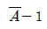
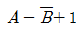
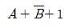
(정답률: 70%)
85. OS(Operating System) 기능 중 자원관리에 속하지 않는 것은?
- 기억장치 관리
- 프로세스 관리
- 파일 관리
- 시스템 관리
(정답률: 50%)
86. 다음 중 언어번역 프로그램에 속하지 않는 것은?
- Assembler
- Compiler
- Generator
- Supervisor
(정답률: 72%)
87. 다음 중 기계어로 번역된 프로그램은?
- 목적 프로그램(Object Program)
- 원시 프로그램(Source Program)
- 컴파일러(Compiler)
- 로더(Loader)
(정답률: 76%)
88. 다음 명령의 수행 결과값은?
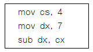
- 1.75
- 3
- 11
- 28
(정답률: 85%)
89. 다음 지문이 설명하고 있는 것은?
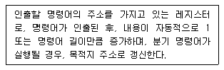
- 기억장치 버퍼 레지스터
- 누산기
- 프로그램 카운터
- 명령 레지스터
(정답률: 78%)
90. 산술 결과 값이 오버플로(Overflow)가 일어났을 때 제어의 흐름이 계속되지 않고 고정된 기억위치로 스위치되어 오버플로(Overflow)에 대한 적절한 처리를 하도록 하는 경우를 무엇이라고 하는가?
- 서브루틴
- 분기
- 인터럽트
- 트랩
(정답률: 57%)
91. 정보통신공사업자의 품위 유지, 기술 향상, 공사시공방법 개량, 기타 공사업의 건전한 발전을 위하여 미래창조과학부장관의 인가를 받아 설립된 기관은?
- 정보통신진흥협회
- 정보통신기술협회
- 정보통신공사협회
- 정보통신공제조합
(정답률: 66%)
92. 방송통신설비의 기술기준에 관한 규정에서 정의하고 있는 ‘선로설비’가 아닌 것은?
- 분배장치
- 전주
- 관로
- 배선반
(정답률: 67%)
93. 보편적 역무를 제공하는 전기통신사업자를 지정할 때 미래창조과학부장관이 고려해야 할 사항이 아닌 것은?
- 전기통신사업자의 기술 능력
- 보편적 역무의 요금 수준
- 보편적 역무의 사업 규모
- 보편적 역무의 가입자 수
(정답률: 67%)
94. 선로설비의 회선 상호간, 회선과 대지간 및 회선의 심선 상호간의 절연저항은 직류 500볼트 절연저항계로 측정하여 얼마 인상이어야 하는가?
- 5메가옴
- 10메가옴
- 15메가옴
- 20메가옴
(정답률: 80%)
95. 다음 중 전력유도 방지조치를 해야 하는 기준으로 잘못된 것은?
- 기기 오동작 유도종전압 : 15볼트 초과
- 잡음전압 : 0.5밀리볼트 초과
- 상시 유도위험종전압 :50볼트 초과
- 이상시 유도위험전압 : 650볼트 초과
(정답률: 62%)
96. 다음 중 통신공동구의 유지ㆍ관리에 필요한 부대설비가 아닌 것은?
- 조명시설
- 환기시설
- 집수시설
- 접지시설
(정답률: 75%)
97. 다음 중 미래창조과학부장관이 정보통신망의 이용촉진을 위하여 행하는 사항으로 옳지 않은 것은?
- 정보통신망에 관한 표준을 정하여 고시한다.
- 정보통신망과 관련된 기술 및 기기에 관한 정보를 체계적이고 종합적으로 관리한다.
- 정보통신망과 관련된 기술 및 기기의 개발을 효율적으로 추진하기 위하여 연구기관으로 하여금 기술지도 등을 한다.
- 정보통신망을 이용하는 이용자의 개인정보를 수집하여 관리한다.
(정답률: 82%)
98. 다음 중 정보통신기술자의 배치에 대한 설명으로 옳지 않은 것은?
- 공사업자는 공사의 시공관리와 그 밖의 기술상의 관리를 하기 위해 공사현장에 정보통신기술자를 1명 이상 배치해야 한다.
- 공사현장에 배치된 정보통신기술자는 공사 발주자의 승낙을 받지 아니하고는 정당한 사유 없이 그 공사현장을 이탈할 수 없다.
- 공사업자는 공사가 중단된 기간이라도 정보통신기술자를 공사현장에 상주하게 하여 공사관리를 해야 한다.
- 공사 발주자는 배치된 정보통신기술자가 업무수행능력이 현저히 부족하다고 인정되는 경우에는 교체를 요청할 수 있다.
(정답률: 85%)
99. 다음 중 정보통신설비 보전을 위한 예비기기 설치 시 고려대상이 아닌 것은?
- 설비의 중요도
- 고장발생률
- 설비의 설치비용
- 복구소요시간
(정답률: 79%)
100. 다음 중 정보통신공사의 설계 및 감리에 관한 설명으로 옳지 않은 것은?
- 감리원은 설계도서 및 관련 규정에 적합하게 공사를 감리해야 한다.
- 설계도서를 작성한 자는 그 설계도서에 서명 또는 기명날인하여야 한다.
- 발주자는 용역업자에게 공사의 설계를 발주하고 소속 기술자만으로 감리업무를 수행하게 해야 한다.
- 공사를 설계하는 자는 기술기준에 적합하게 설계해야 한다.
(정답률: 87%)